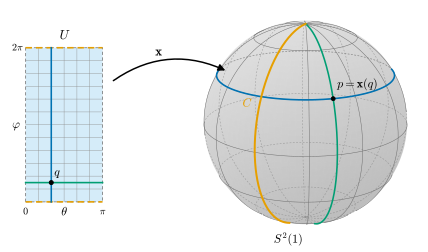
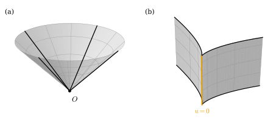
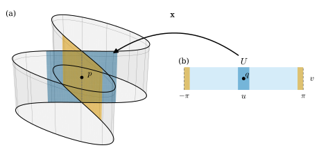
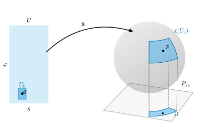

6.1 The Definition of a Regular Surface
Goals
- regular surface의 정의를 정확히 진술하고, 세 조건(smoothness, homeomorphism, total derivative의 injectivity)이 각각 무엇을 막는지 비예로 설명할 수 있다.
- smooth function의 그래프가 regular surface임을 보이고, 이것으로 sphere \(S^2(r)\)이 regular surface임을 증명할 수 있다.
- sphere의 standard parametrization \(\mathbf{x}(\theta, \varphi)\)가 parametrization의 세 조건을 만족함을 직접 확인할 수 있다.
- regular surface가 국소적으로 좌표평면 위의 그래프임을 inverse function theorem으로 증명하고, 이것으로 cone 같은 집합이 regular surface가 아님을 보일 수 있다.
Prerequisites
- Definition 2.2.11 (smooth map), Proposition 2.2.12, Example 2.1.16 (total derivative of the standard parametrization of the sphere)
- Definition 2.3.1 (diffeomorphism), Theorem 2.3.5 (inverse function theorem)
- Definition 3.2.12 (homeomorphism), Definition 3.3.1 (subspace topology), Theorem 3.3.5, Definition 3.3.8 (topological embedding), Non-example 3.3.11 (figure-eight curve)
- Definition 1.2.9 (rank), Corollary 1.3.13 (row rank = column rank), Theorem 1.6.16 (properties of the cross product)
- Definition 4.1.1 (parametrized curve), Proposition 4.2.6 (a regular curve is locally a graph)
Motivation
Chapter 4와 Chapter 5에서는 곡선을 map \(\gamma\colon I \to \R^3\)으로 다루었다(Definition 4.1.1). 속도, 길이, curvature는 모두 map에서 계산했고, trace가 스스로 만나거나(Example 4.1.10) 뾰족해져도(Non-example 4.1.9) map이 매끄럽기만 하면 이론은 그대로 돌아갔다. Section 4.2의 Warning 상자에는 “trace 전체가 좋은 모양인지는 Chapter 6에서 surface를 정의할 때 다시 문제가 된다”고 적어 두었다. 이제 그 문제를 정면으로 다룬다.
sphere, cylinder, torus of revolution처럼 우리가 surface라 부르는 것은 \(\R^3\)의 부분집합이다. 앞으로 정의할 tangent plane, 넓이, curvature는 그 집합 자체의 성질이어야 하고, 그것을 그리는 방법에 따라 달라져서는 안 된다. 한편 미분을 하려면 좌표가 필요하다. 그래서 집합을 작은 조각으로 덮고, 조각마다 평면의 open set에서 오는 좌표 \((u, v)\)를 준다. 조각을 좌표로 나타내는 map이 parametrization이다. 남은 질문은 “parametrization이 어떤 조건을 만족해야 그 조각을 smooth surface의 조각이라 부를 수 있는가”이다. vertex도, 모서리도, 자기 자신에게 달라붙는 곳도 없어야 하고, 각 점에 tangent plane이 있어야 한다. 이 절의 정의는 이 요구를 세 개의 조건으로 옮긴 것이다.

Definition
Definition 6.1.1 (regular surface). 부분집합 \(S \subseteq \R^3\)이 다음 성질을 가지면 regular surface(정칙곡면)이라 한다. 모든 \(p \in S\)에 대하여 \(p\)를 포함하는 \(\R^3\)의 open set \(V\), \(\R^2\)의 open set \(U\), 그리고 \(U\)에서 \(V \cap S\) 위로 가는 map \(\mathbf{x}\colon U \to V \cap S\)가 있어서 다음 세 조건이 성립한다.
- (1) \(\mathbf{x}\)는 매끄럽다. 즉 \(\mathbf{x}\)를 open set \(U\)에서 \(\R^3\)으로 가는 map으로 볼 때 Definition 2.2.11의 뜻으로 매끄럽다.
- (2) \(\mathbf{x}\colon U \to V \cap S\)는 homeomorphism이다. 여기서 \(V \cap S\)에는 \(\R^3\)의 subspace topology(Definition 3.3.1)를 준다.
- (3) 모든 \(q \in U\)에서 total derivative \(D\mathbf{x}(q)\colon \R^2 \to \R^3\)이 injective이다.
이런 \(\mathbf{x}\)를 (\(p\) 근처에서) \(S\)의 parametrization(매개화)라 한다. 국소 parametrization이라고도 한다. \(U\)의 점은 \(q = (u, v)\)로 쓴다.
regular surface는 map이 아니라 집합이다. parametrization은 그 집합을 조각조각 좌표로 나타내는 도구이고, 한 surface에 parametrization은 무수히 많다. 세 조건을 하나씩 풀어 보자.
- 조건 (1)은 미분을 하기 위한 최소한의 요구다. 성분으로 \(\mathbf{x}(u, v) = \big(x(u, v),\ y(u, v),\ z(u, v)\big)\)라 쓰면 세 함수의 모든 계의 partial derivative가 연속이라는 뜻이다.
- 조건 (2)에서 \(\mathbf{x}\)의 연속성은 (1)에서 이미 나오므로(Theorem 3.3.5(c)), 실제 내용은 두 가지다. \(\mathbf{x}\)가 injective이고, inverse map \(\mathbf{x}^{-1}\colon V \cap S \to U\)가 연속이다. 다르게 말하면 \(\mathbf{x}\)는 topological embedding(Definition 3.3.8)이고, 그 image \(\mathbf{x}(U) = V \cap S\)는 \(S\)에서 열려 있다.
- 조건 (3)은 좌표로 쓰면 더 익숙하다. partial derivative를 \(\mathbf{x}_u = \partial\mathbf{x}/\partial u\), \(\mathbf{x}_v = \partial\mathbf{x}/\partial v\)로 쓰면 total derivative의 행렬은
이다(Theorem 2.1.11). linear map이 injective일 필요충분조건은 행렬의 열들이 linearly independent인 것이므로, 조건 (3)은 다음과 서로 동치다.
- (3a) \(\mathbf{x}_u(q)\)와 \(\mathbf{x}_v(q)\)가 linearly independent이다. 즉 \(\rank D\mathbf{x}(q) = 2\)이다(Definition 1.2.9).
- (3b) \(\mathbf{x}_u(q) \times \mathbf{x}_v(q) \neq 0\)이다(Theorem 1.6.16(c)).
- (3c) 세 \(2 \times 2\) minor \(\dfrac{\partial(x, y)}{\partial(u, v)} = \det\begin{pmatrix} x_u & x_v \\ y_u & y_v \end{pmatrix}\), \(\dfrac{\partial(y, z)}{\partial(u, v)}\), \(\dfrac{\partial(x, z)}{\partial(u, v)}\) 가운데 적어도 하나가 \(q\)에서 \(0\)이 아니다.
(3a)와 (3c)의 동치는 이렇다. rank가 \(2\)이면 Corollary 1.3.13에 의해 linearly independent인 행이 두 개 있고, 그 두 행으로 만든 \(2 \times 2\) 행렬은 행이 linearly independent이므로 invertible, 즉 determinant가 \(0\)이 아니다. 거꾸로 어떤 \(2 \times 2\) minor가 \(0\)이 아니면 그 두 행이 linearly independent이므로 rank가 \(2\)이다. (3b)의 cross product의 세 성분이 바로 이 세 minor(부호까지)이라는 것은 Example 6.1.7에서 계산으로 보게 된다.
기하적으로 보자. \(v\)를 \(v_0\)로 고정한 곡선 \(u \mapsto \mathbf{x}(u, v_0)\)과 \(u\)를 \(u_0\)로 고정한 곡선 \(v \mapsto \mathbf{x}(u_0, v)\)을 parametrization \(\mathbf{x}\)의 coordinate curve(좌표곡선)이라 한다. 그 속도가 \(\mathbf{x}_u\)와 \(\mathbf{x}_v\)다. 조건 (3)은 “각 점을 지나는 두 coordinate curve가 모두 regular curve(Definition 4.2.1)이고 서로 접하지 않는다”는 뜻이다.
Example 6.1.2 (plane). \(p_0 \in \R^3\)이고 \(w_1, w_2 \in \R^3\)이 linearly independent일 때 평면 \(S = \{\, p_0 + a w_1 + b w_2 : a, b \in \R \,\}\)은 regular surface이다. parametrization 하나로 전체가 덮인다. \(U = \R^2\), \(V = \R^3\), \(\mathbf{x}(u, v) = p_0 + u w_1 + v w_2\)로 두자. \(A = (w_1 \,|\, w_2)\)를 \(3 \times 2\) 행렬이라 하면 \(\mathbf{x}(q) = p_0 + Aq\)이다.
- (1) 성분이 일차식이므로 매끄럽다.
- (2) \(\mathbf{x}\)는 \(S\) 위로의 map이다. inverse map을 식으로 쓰자. \(A^{\mathsf{T}}A\)는 \(w_1, w_2\)의 Gram matrix이므로 invertible이다(Proposition 1.5.13). \(p = \mathbf{x}(q)\)이면 \((A^{\mathsf{T}}A)^{-1}A^{\mathsf{T}}(p - p_0) = (A^{\mathsf{T}}A)^{-1}A^{\mathsf{T}}Aq = q\)이다. 따라서 \(\mathbf{x}\)는 injective이고, inverse map은 linear map \(p \mapsto (A^{\mathsf{T}}A)^{-1}A^{\mathsf{T}}(p - p_0)\)을 \(S\)로 제한한 것이므로 연속이다(Theorem 3.3.5(b)).
- (3) \(D\mathbf{x}(q) = A\)이고 열 \(w_1, w_2\)가 linearly independent이므로 injective이다.
특히 \(p_0 = 0\), \(w_1 = e_1\), \(w_2 = e_2\)이면 \(xy\) 평면 \(\{z = 0\}\)이고 \(\mathbf{x}(u, v) = (u, v, 0)\)이다.
Verification: verify/v-6-1-definition.py
다음 비예는 세 조건을 하나씩 어기는 map 셋이다. (b)와 (c)는 나머지 두 조건을 모두 지키고, (a)는 (1)이 깨지는 한 점에서 (3)을 물을 수 없다는 점만 다르다. 셋 다 그 image에 “surface라 부르고 싶지 않은” 곳이 있다(Figure 6.1.2, Figure 6.1.3).
Non-example 6.1.3 (maps that violate the conditions one at a time). (a) 조건 (1)만 어긋남: cone. \(U = \R^2\), \(\mathbf{x}(u, v) = \big(u,\ v,\ \sqrt{u^2 + v^2}\big)\)이라 하자. image는 한 겹 cone \(K = \{(x, y, z) : z = \sqrt{x^2 + y^2}\}\)이다. \(\mathbf{x}\)는 연속함수 \(\sqrt{u^2 + v^2}\)의 그래프 map이므로 \(K\) 위로의 homeomorphism이다(Example 3.3.9(b); \(V = \R^3\)으로 둔다). 그러나 셋째 성분은 \((0, 0)\)에서 미분가능하지 않다. \(v = 0\)으로 두면 \(\abs{u}\)이고, 차분몫 \(\abs{h}/h\)는 \(h \to 0\)일 때 극한이 없다(Non-example 2.1.5). 원점 밖에서는 \(\rho = \sqrt{u^2 + v^2}\)로 쓸 때 \(\mathbf{x}_u = (1, 0, u/\rho)\), \(\mathbf{x}_v = (0, 1, v/\rho)\)가 linearly independent이므로 (3)이 성립한다. 원점에서는 \(D\mathbf{x}(0, 0)\)이 없어서 (3)을 물을 수조차 없다. 곧 이 map이 어기는 것은 (1)이고, 원점에서 (3)이 뜻을 잃는 것은 (1)이 깨진 결과다.
(b) 조건 (3)만 어긋남: cuspidal cylinder. \(U = \R^2\), \(\mathbf{x}(u, v) = (u^2,\ u^3,\ v)\)라 하자. image는 cusp 곡선 \((t^2, t^3)\)(Non-example 4.1.9)을 \(z\)축 방향으로 쌓은 \(Z = \{(x, y, z) : x = \abs{y}^{2/3}\}\)이다. \(\mathbf{x}\)는 매끄럽고, \(u^3\)이 \(u\)를 결정하므로 injective이며, inverse map \((x, y, z) \mapsto (y^{1/3}, z)\)는 연속이다. 따라서 (1)과 (2)가 성립한다. 그러나 \(\mathbf{x}_u = (2u, 3u^2, 0)\)이 \(u = 0\)에서 \(0\)이므로 \(D\mathbf{x}(0, v)\)의 rank는 \(1\)이다.
(c) 조건 (2)만 어긋남: figure-eight cylinder. \(U = (-\pi, \pi) \times \R\), \(\mathbf{x}(u, v) = (\sin 2u,\ \sin u,\ v)\)라 하자. image는 figure-eight curve \(E = \beta((-\pi, \pi))\)(Non-example 3.3.11)를 쌓은 \(E \times \R\)이다. \(\mathbf{x}\)는 매끄럽다. \(\mathbf{x}_u = (2\cos 2u,\ \cos u,\ 0)\), \(\mathbf{x}_v = (0, 0, 1)\)이고, \(\cos u = 0\)이면 \(u = \pm\pi/2\)라서 \(\cos 2u = -1\)이므로 \((2\cos 2u, \cos u) \neq 0\)이다. 따라서 두 partial derivative는 linearly independent이고 (3)이 성립한다. \(\mathbf{x}\)가 injective인 것은 Non-example 3.3.11에서 \(\beta\)가 injective인 것과 같다. 그러나 \(\mathbf{x}\colon U \to E \times \R\)는 homeomorphism이 아니다. \(u \to \pi\)이면 \(\mathbf{x}(u, 0) \to (0, 0, 0) = \mathbf{x}(0, 0)\)인데 \((u, 0)\)은 \((0, 0)\)으로 가지 않으므로, \(\mathbf{x}^{-1}\)은 원점에서 연속이 아니다(Figure 6.1.3).


세 map은 parametrization이 아니다. 그리고 세 image는 모두 surface로 부르고 싶지 않은 곳(vertex, 뾰족한 모서리, 자기 자신에게 달라붙는 선)을 가진다. 조건 (1), (3), (2)를 하나씩 빼면 이런 집합까지 regular surface로 인정하게 된다. 단, 이 결론에는 한 단계가 빠져 있다. map 하나가 조건을 어긴다고 해서 그 image가 regular surface가 아니라는 것은 아니다. 다른 parametrization이 있을 수도 있기 때문이다. 이 빈틈은 Proposition 6.1.8을 증명한 뒤 Non-example 6.1.9에서 메운다.
Graph Surfaces
가장 쉬운 regular surface는 함수의 그래프다. 그래프는 좌표 \((u, v)\)를 그대로 쓰므로 inverse map이 projection이 되고, 조건 (2)를 확인하는 수고가 거의 없다.
Proposition 6.1.4 (a graph is a regular surface). \(U \subseteq \R^2\)가 open set이고 \(f\colon U \to \R\)가 매끄럽다고 하자. 그러면 \(f\)의 그래프 \(\Gamma(f) = \{(u, v, f(u, v)) : (u, v) \in U\}\)는 regular surface이고,
는 \(\Gamma(f)\) 전체를 덮는 parametrization이다. \(y = f(x, z)\)나 \(x = f(y, z)\) 꼴의 그래프, 곧 \((u, f(u, v), v)\)나 \((f(u, v), u, v)\)의 image도 regular surface이다.
Proof. 모든 점에서 \(V = \R^3\)으로 두면 \(V \cap \Gamma(f) = \Gamma(f) = \mathbf{x}(U)\)이다. (1) 성분 \(u\), \(v\), \(f\)가 매끄럽다. (3) \(D\mathbf{x} = \begin{pmatrix} 1 & 0 \\ 0 & 1 \\ f_u & f_v \end{pmatrix}\)의 위쪽 \(2 \times 2\) 부분이 identity matrix이므로 \(\partial(x, y)/\partial(u, v) = 1 \neq 0\)이다(Example 2.5.6). (2) \(\mathbf{x}\)는 연속함수의 그래프 map이므로 topological embedding이다. 즉 \(\Gamma(f)\) 위로의 homeomorphism이고, inverse map은 projection \((x, y, z) \mapsto (x, y)\)의 restriction이다(Example 3.3.9(b)). 나머지 두 꼴은 좌표의 순서를 바꾸는 linear isomorphism, 예를 들어 \(Q_{23}(a, b, c) = (a, c, b)\)를 합성한 \(Q_{23} \circ \mathbf{x}\)이다. \(Q_{23}\)는 \(\R^3\)의 homeomorphism이므로 \(\Gamma(f)\)를 \(Q_{23}(\Gamma(f))\) 위로 homeomorphism으로 보내고, \(Q_{23}\)가 linear이고 invertible이므로 \(D(Q_{23} \circ \mathbf{x}) = Q_{23}\,D\mathbf{x}\)는 injective이다. 따라서 \(Q_{23} \circ \mathbf{x}\)도 (1)–(3)을 만족한다.
예를 들어 paraboloid \(z = x^2 + y^2\)과 saddle surface \(z = x^2 - y^2\)은 regular surface이다. saddle surface는 이 study set의 running example이고, Chapter 8에서 원점의 curvature를 계산한다. Equation (6.1.2)를 graph surface의 standard parametrization이라 부른다.
Example 6.1.5 (sphere: six hemispheres). 반지름 \(r \gt 0\)인 sphere \(S^2(r) = \{p \in \R^3 : \abs{p} = r\}\)은 regular surface이다. open half-space \(V_1 = \{z \gt 0\}\)을 보자. \((x, y, z) \in S^2(r) \cap V_1\)이면 \(x^2 + y^2 = r^2 - z^2 \lt r^2\)이고 \(z = \sqrt{r^2 - x^2 - y^2}\)이다. 거꾸로 \(u^2 + v^2 \lt r^2\)이면 \((u, v, \sqrt{r^2 - u^2 - v^2})\)는 \(S^2(r) \cap V_1\)의 점이다. 따라서
\[ S^2(r) \cap V_1 = \big\{\, \big(u,\ v,\ \sqrt{r^2 - u^2 - v^2}\big) : (u, v) \in B_r(0) \,\big\} \]
는 open disk \(B_r(0) \subseteq \R^2\) 위에서 smooth function \(\sqrt{r^2 - u^2 - v^2}\)(양수의 제곱근, Example 2.2.18)의 그래프다. Proposition 6.1.4의 parametrization \(\mathbf{x}_1(u, v) = (u, v, \sqrt{r^2 - u^2 - v^2})\)는 (1)–(3)을 만족하고 image가 \(V_1 \cap S^2(r)\)이다. 같은 방식으로 \(V_2 = \{z \lt 0\}\), \(V_3 = \{y \gt 0\}\), \(V_4 = \{y \lt 0\}\), \(V_5 = \{x \gt 0\}\), \(V_6 = \{x \lt 0\}\)에서 \(-\sqrt{\cdot}\)이나 다른 두 좌표평면 위의 그래프로 parametrization \(\mathbf{x}_2, \dots, \mathbf{x}_6\)을 얻는다. \(S^2(r)\)의 점은 원점이 아니므로 어느 좌표가 \(0\)이 아니고, 따라서 여섯 \(V_i\) 가운데 하나에 들어간다. 그러므로 \(S^2(r)\)은 regular surface이다. (Exercise 3.3.2에서 위쪽 hemisphere와 disk가 homeomorphic임을 보였고, Example 2.4.9에서 sphere가 국소적으로 그래프임을 implicit function theorem으로 보았다.)
Verification: verify/v-6-1-definition.py
The Standard Parametrization of the Sphere
hemisphere 그래프는 regular surface임을 보이기에는 편하지만 계산에는 불편하다. 앞으로 sphere를 계산할 때는 colatitude \(\theta\)와 경도 \(\varphi\)를 쓰는 standard parametrization을 쓴다. Example 4.1.13에서 “이 식이 sphere의 parametrization이라는 것은 Chapter 6에서 다룬다”고 미루어 둔 것을 여기서 확인한다. 조건 (2)를 보이려면 경도를 점의 연속함수로 되찾아야 하는데, Non-example 3.2.15에서 보았듯이 반열린구간 \([0, 2\pi)\)에서는 그렇게 되지 않는다. 열린구간에서는 된다.
Lemma 6.1.6 (angle function). \(e\colon \R \to S^1\), \(e(t) = (\cos t, \sin t)\)라 하자. 모든 \(t_0 \in \R\)에 대하여 \(e\)를 \((t_0, t_0 + 2\pi)\)로 제한한 map은 \(S^1 \setminus \{e(t_0)\}\) 위로의 homeomorphism이다. \(t_0 = 0\)일 때 그 inverse map은
이다. 즉 \(\operatorname{Arg}\colon S^1 \setminus \{(1, 0)\} \to (0, 2\pi)\)는 연속이고 \(\big(\cos\operatorname{Arg}(a, b),\ \sin\operatorname{Arg}(a, b)\big) = (a, b)\)이다.
Proof idea: \(b/(1 - a)\)는 점 \((1, 0)\)과 \((a, b)\)를 잇는 직선의 기울기에 \(-1\)을 곱한 것이고, 각 \(t\)로 쓰면 \(\cot(t/2)\)이다. 반각 공식으로 \(t\)를 연속적으로 되찾는다.
Proof. 먼저 \(t_0 = 0\)인 경우다. \(S^1\) 위에서 \(a = 1\)이면 \(b = 0\)이므로, \(S^1 \setminus \{(1, 0)\}\)의 점은 \(a \lt 1\)이고 (6.1.3)은 뜻이 있다. 그 값은 \(\arctan\)의 값이 \((-\pi/2, \pi/2)\)에 있으므로 \((0, 2\pi)\)에 있다. \(t \in (0, 2\pi)\)이면 \(\cos t \neq 1\)이므로 \(e(t) \in S^1 \setminus \{(1, 0)\}\)이다. 반각 공식과 \(\sin(t/2) \gt 0\)에서
\[ \frac{\sin t}{1 - \cos t} = \frac{2\sin(t/2)\cos(t/2)}{2\sin^2(t/2)} = \cot\frac{t}{2} \]
이다. \(s \in (0, \pi)\)이면 \(\cot s = \tan(\pi/2 - s)\)이고 \(\pi/2 - s \in (-\pi/2, \pi/2)\)이므로 \(\arctan(\cot s) = \pi/2 - s\)이다. \(s = t/2\)로 두면 \(\operatorname{Arg}(e(t)) = \pi - 2(\pi/2 - t/2) = t\)이다. 즉 \(\operatorname{Arg} \circ e = \id_{(0, 2\pi)}\)이고, 특히 \(e\)는 \((0, 2\pi)\)에서 injective이다.
이제 \(e \circ \operatorname{Arg} = \id\)를 보이자. \(S^1 \setminus \{(1, 0)\}\)의 점 \((a, b)\)는 \(m = b/(1 - a)\)로 결정된다. 실제로 \(b = m(1 - a)\)를 \(a^2 + b^2 = 1\)에 넣으면 \((1 - a)\big((1 + a) - m^2(1 - a)\big) = 0\)이고, \(a \neq 1\)이므로 \(a = (m^2 - 1)/(m^2 + 1)\), \(b = 2m/(m^2 + 1)\)이다. \(t = \operatorname{Arg}(a, b)\)라 하면 \(\arctan m = (\pi - t)/2\)이므로 \(m = \tan(\pi/2 - t/2) = \cot(t/2)\)이다. 위의 계산에서 \(e(t)\)에 대한 같은 비 \(\sin t/(1 - \cos t)\)도 \(\cot(t/2) = m\)이므로, \(e(t)\)와 \((a, b)\)는 같은 \(m\)을 갖는 \(S^1 \setminus \{(1, 0)\}\)의 점이고 따라서 같다. \(e\)와 \(\operatorname{Arg}\)는 연속함수(삼각함수, 분모가 \(0\)이 아닌 몫, \(\arctan\))의 합성이므로 연속이다. 그러므로 \(e|_{(0, 2\pi)}\)는 homeomorphism이다.
일반적인 \(t_0\): 회전 \(R_{t_0}(a, b) = (a\cos t_0 - b\sin t_0,\ a\sin t_0 + b\cos t_0)\)는 \(S^1\)의 homeomorphism이고(inverse map \(R_{-t_0}\)), 덧셈정리에서 \(e(t_0 + s) = R_{t_0}(e(s))\)이다. 따라서 \(e|_{(t_0, t_0 + 2\pi)}\)는 homeomorphism \(t \mapsto t - t_0\), \(e|_{(0, 2\pi)}\), \(R_{t_0}\)의 합성이고, image는 \(R_{t_0}(S^1 \setminus \{(1, 0)\}) = S^1 \setminus \{e(t_0)\}\)이다.
Example 6.1.7 (standard parametrization of the sphere). 반지름 \(r\)인 sphere의 standard parametrization(Example 2.1.16)
를 보자. 반원 \(C = \{(x, y, z) \in S^2(r) : y = 0,\ x \ge 0\}\)(두 극을 포함한다)과 closed half-plane \(\{(x, 0, z) : x \ge 0\}\)의 여집합 \(V\)를 잡으면 \(V\)는 open set이고 \(V \cap S^2(r) = S^2(r) \setminus C\)이다. \(\mathbf{x}\)가 \(U\)에서 \(V \cap S^2(r)\) 위로 가는 parametrization임을 보이자.
- (1) smoothness. 성분이 삼각함수의 곱이다.
- (3) total derivative의 injectivity. partial derivative는
\[ \mathbf{x}_\theta = (r\cos\theta\cos\varphi,\ r\cos\theta\sin\varphi,\ -r\sin\theta), \qquad \mathbf{x}_\varphi = (-r\sin\theta\sin\varphi,\ r\sin\theta\cos\varphi,\ 0) \]
이다. cross product를 성분마다 계산하면
\[ \begin{aligned} (\mathbf{x}_\theta \times \mathbf{x}_\varphi)^1 &= (r\cos\theta\sin\varphi)(0) - (-r\sin\theta)(r\sin\theta\cos\varphi) = r^2\sin^2\theta\cos\varphi,\\ (\mathbf{x}_\theta \times \mathbf{x}_\varphi)^2 &= (-r\sin\theta)(-r\sin\theta\sin\varphi) - (r\cos\theta\cos\varphi)(0) = r^2\sin^2\theta\sin\varphi,\\ (\mathbf{x}_\theta \times \mathbf{x}_\varphi)^3 &= (r\cos\theta\cos\varphi)(r\sin\theta\cos\varphi) - (r\cos\theta\sin\varphi)(-r\sin\theta\sin\varphi) = r^2\sin\theta\cos\theta \end{aligned} \]
이므로
이다(\(0 \lt \theta \lt \pi\)에서 \(\sin\theta \gt 0\)). 따라서 (3)이 성립한다. 셋째 성분 \(r^2\sin\theta\cos\theta\)는 \(\partial(x, y)/\partial(\theta, \varphi)\)이고, 첫째와 둘째 성분은 각각 \(\partial(y, z)/\partial(\theta, \varphi)\)와 \(-\partial(x, z)/\partial(\theta, \varphi)\)이다. 곧 조건 (3b)와 (3c)는 같은 계산이다. (\(\mathbf{x}_\theta, \mathbf{x}_\varphi\)의 linear independence은 Exercise 1.1.5에서도 직접 보였다.)
- (2) homeomorphism. \(\abs{\mathbf{x}}^2 = r^2\sin^2\theta(\cos^2\varphi + \sin^2\varphi) + r^2\cos^2\theta = r^2\)이므로 \(\mathbf{x}(U) \subseteq S^2(r)\)이다. \(y = r\sin\theta\sin\varphi = 0\)이면 \(\varphi = \pi\)이고 그때 \(x = -r\sin\theta \lt 0\)이므로 \(\mathbf{x}(U) \cap C = \varnothing\)이다. 거꾸로 \(p = (x, y, z) \in S^2(r) \setminus C\)라 하자. 두 극은 \(C\)에 있으므로 \(\rho = \sqrt{x^2 + y^2} \gt 0\)이고 \(\abs{z} \lt r\)이다. \(\theta = \arccos(z/r) \in (0, \pi)\)로 두면 \(\sin\theta = \sqrt{1 - z^2/r^2} = \rho/r\)이다. \((x/\rho, y/\rho) \in S^1\)이고, \(p \notin C\)이므로 이 점은 \((1, 0)\)이 아니다(\((1, 0)\)이면 \(y = 0\), \(x = \rho \gt 0\)). \(\varphi = \operatorname{Arg}(x/\rho, y/\rho) \in (0, 2\pi)\)로 두면 Lemma 6.1.6에 의해 \((\cos\varphi, \sin\varphi) = (x/\rho, y/\rho)\)이고, \(\mathbf{x}(\theta, \varphi) = \big(r\tfrac{\rho}{r}\tfrac{x}{\rho},\ r\tfrac{\rho}{r}\tfrac{y}{\rho},\ r\tfrac{z}{r}\big) = p\)이다. 또 \(\mathbf{x}(\theta, \varphi) = p\)이면 \(\cos\theta = z/r\)에서 \(\theta\)가, \((\cos\varphi, \sin\varphi) = (x/\rho, y/\rho)\)에서 \(\varphi\)가 하나로 정해진다(\(\arccos\)와 Lemma 6.1.6의 injectivity). 따라서 \(\mathbf{x}\)는 \(V \cap S^2(r)\) 위로의 bijection이고 그 inverse map은
이다. \(\rho \gt 0\)인 곳에서 연속함수의 합성이므로 \(\mathbf{x}^{-1}\)은 연속이다. 그러므로 \(\mathbf{x}\)는 \(S^2(r) \setminus C\)의 parametrization이다(Figure 6.1.1).
빠진 반원 덮기. linear map \(Q(x, y, z) = (-x, z, y)\)는 \(\abs{Qp} = \abs{p}\)이고 \(Q \circ Q = \id\)이므로 \(S^2(r)\)을 자기 자신 위로 보내는 \(\R^3\)의 homeomorphism이다. \(\tilde{\mathbf{x}} = Q \circ \mathbf{x}\), 곧 \(\tilde{\mathbf{x}}(\theta, \varphi) = (-r\sin\theta\cos\varphi,\ r\cos\theta,\ r\sin\theta\sin\varphi)\)도 parametrization이다. (1)은 linear map과의 합성이라서, (3)은 \(D\tilde{\mathbf{x}} = Q\,D\mathbf{x}\)이고 \(Q\)가 invertible이라서, (2)는 \(Q\)가 \(V \cap S^2(r)\)을 \(Q(V) \cap S^2(r)\) 위로 homeomorphism으로 보내고 \(Q(V)\)가 open set이라서 성립한다. \(\tilde{\mathbf{x}}\)가 빠뜨리는 곳은 \(Q(C) = \{(x, y, 0) \in S^2(r) : x \le 0\}\)(적도의 절반)이다. \(C\)와 \(\{z = 0\}\)의 공통점은 \((r, 0, 0)\)뿐이고 이 점은 \(Q(C)\)에 없으므로 \(C \cap Q(C) = \varnothing\), 즉 \(S^2(r) = \mathbf{x}(U) \cup \tilde{\mathbf{x}}(U)\)이다.
Verification: verify/v-6-1-definition.py
A Regular Surface Is Locally a Graph
Proposition 6.1.4는 “그래프는 regular surface”라고 말했다. 그 역이 국소적으로 성립한다. 이것이 이 장 전체의 기술적 핵심이다. 세 좌표평면으로의 projection을 \(P_{xy}(x, y, z) = (x, y)\), \(P_{yz}(x, y, z) = (y, z)\), \(P_{xz}(x, y, z) = (x, z)\)로 쓴다.
Proposition 6.1.8 (a regular surface is locally a graph). \(S\)가 regular surface이고 \(\mathbf{x}\colon U \to S\)가 parametrization이며 \(q \in U\), \(p = \mathbf{x}(q)\)라 하자. 그러면 세 projection 가운데 하나 \(P\), \(q\)를 포함하는 open set \(U_0 \subseteq U\), \(\R^3\)의 open set \(W\)가 있어서 다음이 성립한다.
- (a) \(\Omega = P(\mathbf{x}(U_0))\)는 \(\R^2\)의 open set이고 \(P \circ \mathbf{x}|_{U_0}\colon U_0 \to \Omega\)는 diffeomorphism이다.
- (b) \(W \cap S = \mathbf{x}(U_0)\)이고, 이 집합은 \(\Omega\) 위의 smooth function의 그래프다. 예를 들어 \(P = P_{xy}\)이면 smooth \(g\colon \Omega \to \R\)가 있어서 \(W \cap S = \{(a, b, g(a, b)) : (a, b) \in \Omega\}\)이다.
- (c) \(\Pi = (P \circ \mathbf{x}|_{U_0})^{-1} \circ P\)는 \(\R^3\)의 open set \(P^{-1}(\Omega)\)에서 정의된 smooth map이고, \(W \cap S \subseteq P^{-1}(\Omega)\) 위에서 \(\mathbf{x}^{-1}\)과 같다. 즉
이다. 특히 regular surface의 모든 점은, \(S\)에서 열려 있으며 어느 좌표평면 위의 smooth function의 그래프인 neighborhood를 갖는다.
이 명제가 말하는 것. regular surface를 한 점 근처에서 확대하면 세 좌표평면 가운데 하나 위의 smooth 그래프다. 게다가 \(\mathbf{x}^{-1}\)은 surface 위에서만 정의된 map이지만, 한 점 근처에서는 \(\R^3\)의 open set에서 정의된 smooth map \(\Pi\)의 restriction과 같다. (c)는 다음 두 절에서 tangent plane이 잘 정의됨(Section 6.2)과 change of parameters가 smoothness(Section 6.3)를 증명하는 열쇠다.
Proof idea(Figure 6.1.4): 조건 (3)에 의해 \(D\mathbf{x}(q)\)의 어떤 두 행이 invertible인 \(2 \times 2\) 행렬을 이룬다. 그 두 좌표로의 projection과 \(\mathbf{x}\)를 합성하면 \(\R^2\)에서 \(\R^2\)로 가는 map이 되고, inverse function theorem이 쓰인다. 조건 (2)는 \(\mathbf{x}(U_0)\)가 \(S\)에서 열려 있게 해 준다.
Proof. 조건 (3)에 의해 \(\rank D\mathbf{x}(q) = 2\)이고, (3a)⇔(3c)에서 보았듯이 어떤 두 행이 invertible인 \(2 \times 2\) 행렬을 이룬다. 그 두 행이 \(x, y\) 성분의 행이라 하고 \(P = P_{xy}\)로 두자(다른 경우는 좌표의 이름만 바꾸면 된다). \(P\)가 linear이므로 chain rule에서 \(D(P \circ \mathbf{x})(q) = P\,D\mathbf{x}(q)\)는 \(D\mathbf{x}(q)\)의 첫 두 행, 곧 invertible matrix이다.
(a) inverse function theorem을 smooth map \(P \circ \mathbf{x}\colon U \to \R^2\)에 쓰면 \(q\)를 포함하는 open set \(U_0 \subseteq U\)와 \(P(p)\)를 포함하는 open set \(\Omega\)가 있어서 \(P \circ \mathbf{x}|_{U_0}\colon U_0 \to \Omega\)가 diffeomorphism이다. 특히 \(\Omega = P(\mathbf{x}(U_0))\)이다. 그 inverse map을 \(k = (P \circ \mathbf{x}|_{U_0})^{-1}\colon \Omega \to U_0\)로 쓴다.
(b) 조건 (2)에 의해 \(\mathbf{x}\colon U \to \mathbf{x}(U)\)는 homeomorphism이므로 \(U\)의 open set \(U_0\)의 image \(\mathbf{x}(U_0)\)는 \(\mathbf{x}(U) = V \cap S\)에서 열려 있다. subspace topology의 정의에서 \(\R^3\)의 open set \(O\)가 있어 \(\mathbf{x}(U_0) = O \cap (V \cap S)\)이다. \(W = O \cap V\)로 두면 \(W\)는 열려 있고 \(W \cap S = \mathbf{x}(U_0)\)이다. 이제 \(\mathbf{x} = (x, y, z)\)의 셋째 성분으로 \(g = z \circ k\colon \Omega \to \R\)를 두면 \(g\)는 매끄럽다. \((a, b) \in \Omega\)이면 \(P(\mathbf{x}(k(a, b))) = (a, b)\)이므로 \(\mathbf{x}(k(a, b)) = (a, b, g(a, b))\)이다. 거꾸로 \(\mathbf{x}(U_0)\)의 점은 \(\mathbf{x}(u)\), \(u \in U_0\)이고, \(u = k(P(\mathbf{x}(u)))\)이므로 \(\mathbf{x}(u) = (P(\mathbf{x}(u)),\ g(P(\mathbf{x}(u))))\)이다. 따라서 \(\mathbf{x}(U_0)\)는 \(\Omega\) 위의 \(g\)의 그래프다.
(c) \(P^{-1}(\Omega) = \Omega \times \R\)는 open set이고, \(\Pi = k \circ P\)는 smooth map의 합성이므로 매끄럽다(Proposition 2.2.12(b)). \(p' \in W \cap S = \mathbf{x}(U_0)\)이면 \(p' = \mathbf{x}(u)\), \(u \in U_0\)이고 \(P(p') \in \Omega\)이므로 \(p' \in P^{-1}(\Omega)\)이며, \(\Pi(p') = k(P(\mathbf{x}(u))) = u = \mathbf{x}^{-1}(p')\)이다.

Sets That Are Not Regular Surfaces
이제 Non-example 6.1.3의 빈틈을 메울 수 있다. 어떤 집합이 regular surface라면 Proposition 6.1.8에 의해 각 점 근처가 어느 좌표평면 위의 smooth 그래프여야 한다. 그래프라면 그 좌표평면으로의 projection이 근처에서 injective여야 하므로, 이것을 깨뜨리는 점 두 개를 찾으면 된다.
Non-example 6.1.9 (sets that are not regular surfaces). 다음 집합은 regular surface가 아니다. 모두 원점 \(0\)에서 Proposition 6.1.8의 결론이 성립하지 않음을 보인다. 즉 \(0\)을 포함하는 어떤 open set \(W\)에 대해서도 \(W \cap S\)가 세 좌표평면 어느 것 위의 smooth 그래프도 아니다. 그래프라면 \(W\)가 \(0\)을 포함하는 open ball \(B_\varepsilon(0)\)을 포함하므로, \(B_\varepsilon(0) \cap S\)의 점들이 그 projection으로 구별되어야 한다는 것을 쓴다.
(a) 한 겹 cone \(K = \{z = \sqrt{x^2 + y^2}\}\) ([dC §2-2 Example 5]). 작은 \(t \gt 0\)에 대해 \((0, t, t)\)와 \((0, -t, t)\)는 \(K \cap B_\varepsilon(0)\)의 서로 다른 점인데 \(P_{xz}\)의 값이 \((0, t)\)로 같다. 마찬가지로 \((t, 0, t)\)와 \((-t, 0, t)\)는 \(P_{yz}\)의 값이 같다. \(xy\) 평면 위의 그래프 \(z = g(a, b)\)라면, \(K\)가 이미 \(\sqrt{x^2 + y^2}\)의 그래프이므로 \(g(a, b) = \sqrt{a^2 + b^2}\)여야 하고 이것은 원점에서 미분가능하지 않다.
(b) 두 평면의 합집합 \(S_0 = \{z = 0\} \cup \{x = 0\}\). \(P_{xy}\): \((0, 0, t)\)와 \((0, 0, 0)\)이 같은 값을 갖는다. \(P_{yz}\): \((t, 0, 0)\)과 \((0, 0, 0)\)이 같은 값을 갖는다. \(P_{xz}\): \((0, t, 0)\)과 \((0, 0, 0)\)이 같은 값 \((0, 0)\)을 갖는다. 여기서 \(t\)는 \(0\)이 아닌 작은 수이고, 모든 점이 \(S_0 \cap B_\varepsilon(0)\)에 있다.
(c) cuspidal cylinder \(Z = \{x = \abs{y}^{2/3}\}\). \(P_{xy}\): \((0, 0, t)\)와 \((0, 0, 0)\). \(P_{xz}\): \((t^2, t^3, 0)\)과 \((t^2, -t^3, 0)\). \(yz\) 평면 위의 그래프 \(x = h(y, z)\)라면 \(h(y, z) = \abs{y}^{2/3}\)이어야 하는데, 이것은 \(y = 0\)에서 \(y\)에 대해 미분가능하지 않다(차분몫 \(\abs{y}^{2/3}/y = \pm\abs{y}^{-1/3}\)이 발산한다). cusp가 parametrization이 아니라 trace 자체의 성질이라는 것은 곡선에서도 보았다(Exercise 4.2.8).
(d) figure-eight cylinder \(E \times \R\). \(P_{xy}\): \((0, 0, t)\)와 \((0, 0, 0)\). 작은 \(s \gt 0\)에 대하여 \(\beta(s) = (\sin 2s, \sin s)\), \(\beta(\pi - s) = (-\sin 2s, \sin s)\), \(\beta(s - \pi) = (\sin 2s, -\sin s)\)는 모두 \(E\)의 점이다. \(P_{yz}\): \((\sin 2s, \sin s, 0)\)과 \((-\sin 2s, \sin s, 0)\). \(P_{xz}\): \((\sin 2s, \sin s, 0)\)과 \((\sin 2s, -\sin s, 0)\). \(s \to 0\)이면 이 점들은 모두 원점으로 간다.
Verification: verify/v-6-1-definition.py
(a), (c), (d)는 Non-example 6.1.3의 세 image이다. 따라서 Definition 6.1.1의 세 조건은 모두 꼭 필요하다. 어느 하나를 빼면 cone, cuspidal cylinder, figure-eight cylinder 가운데 하나가 regular surface로 인정된다(cone은 (1)을 빼고 (3)을 미분가능한 점에서만 요구할 때). (d)에서는 원점 근처의 두 조각이 서로 다른 평면처럼 엇갈린다. 그래서 이 점에서는 “tangent plane”을 하나로 정할 수 없다(Section 6.2에서 정확히 본다).
Summary
- regular surface는 각 점 근처가 parametrization \(\mathbf{x}\colon U \to V \cap S\)의 image인 \(\R^3\)의 부분집합이다. parametrization은 (1) 매끄럽고, (2) homeomorphism이며, (3) \(D\mathbf{x}(q)\)가 injective, 곧 \(\mathbf{x}_u \times \mathbf{x}_v \neq 0\)이다.
- 세 조건은 각각 vertex(cone), 자기 자신에게 달라붙는 곳(figure-eight cylinder), 뾰족한 모서리(cuspidal cylinder)를 막는다. 조건은 map에 대한 것이므로, 집합이 regular surface가 아님을 보이려면 모든 parametrization을 배제해야 한다.
- smooth function의 그래프는 regular surface이다(Proposition 6.1.4). sphere \(S^2(r)\)은 여섯 hemisphere의 그래프로 덮이므로 regular surface이다.
- sphere의 standard parametrization \(\mathbf{x}(\theta, \varphi)\)는 반원 \(C\)를 뺀 \(S^2(r) \setminus C\)의 parametrization이고 \(\mathbf{x}_\theta \times \mathbf{x}_\varphi = r\sin\theta\,\mathbf{x}\)이다. 회전시킨 parametrization과 함께 sphere 전체를 덮는다.
- regular surface는 국소적으로 좌표평면 위의 smooth 그래프이고, \(\mathbf{x}^{-1}\)은 국소적으로 \(\R^3\)의 open set 위의 smooth map \(\Pi\)의 restriction이다(Proposition 6.1.8).
다음 절에서는 regular surface의 각 점에서 tangent plane을 정의한다. surface 위에 놓여 한 점을 지나는 곡선들의 속도벡터를 모두 모으면 정말 평면이 되는가, 그리고 그 평면은 parametrization을 고르는 방법에 무관한가? Proposition 6.1.8의 (c)가 답의 열쇠다.
Exercises
Exercise 6.1.1 ★ open disk \(D = \{(x, y, 0) : x^2 + y^2 \lt 1\}\)은 regular surface이고, closed disk \(\bar D = \{(x, y, 0) : x^2 + y^2 \le 1\}\)과 그 경계원 \(\partial D = \{(x, y, 0) : x^2 + y^2 = 1\}\)은 regular surface가 아님을 보여라. [dC §2-2 Exercise 2, modified]
Hint
\(\bar D\)나 \(\partial D\)가 regular surface라면 점 \((1, 0, 0)\)에서 Proposition 6.1.8을 쓴다. 그 결론 (a)에서 projection의 image \(\Omega\)는 \(\R^2\)의 open set이다.
Solution
\(D\)는 regular surface이다. \(V = \{(x, y, z) : x^2 + y^2 \lt 1\}\)(open cylinder)과 \(U = B_1(0) \subseteq \R^2\), \(\mathbf{x}(u, v) = (u, v, 0)\)을 잡으면 \(V \cap D = D = \mathbf{x}(U)\)이다. \(\mathbf{x}\)는 영함수의 그래프 map이므로 Proposition 6.1.4에 의해 (1)–(3)을 만족한다.
\(\bar D\)는 regular surface가 아니다. regular surface라 하고 \(p = (1, 0, 0)\)에 Proposition 6.1.8을 쓰자. \(p\)를 포함하는 open set \(W\)가 있어서 \(W \cap \bar D\)가 어느 좌표평면 위의 그래프다. \(W \supseteq B_\varepsilon(p)\)라 하자. \(P_{xz}\)라면: 작은 \(\delta \gt 0\)에 대해 \((1 - \delta^2, \pm\delta, 0)\)은 \(\bar D \cap B_\varepsilon(p)\)의 서로 다른 두 점인데 projection이 같으므로 모순이다. \(P_{yz}\)라면: \((1, 0, 0)\)과 \((1 - \delta, 0, 0)\)의 projection이 같다. \(P_{xy}\)라면: 그래프의 정의역 \(\Omega = P_{xy}(W \cap \bar D)\)는 \((1, 0)\)을 포함하는 open set이므로 어떤 \(\delta \gt 0\)에 대해 \((1 + \delta, 0) \in \Omega\)이고, 그 위의 그래프 점 \((1 + \delta, 0, g)\)가 \(\bar D\)에 있어야 하는데 \(\bar D\)의 점은 \(x \le 1\)이므로 모순이다.
\(\partial D\)는 regular surface가 아니다. regular surface라 하고 \(p = (1, 0, 0)\)에 Proposition 6.1.8을 쓰면, 어느 projection \(P\)와 \(p\)를 포함하는 open set \(W\)가 있어서 \(\Omega = P(W \cap \partial D)\)가 \(\R^2\)의 공집합이 아닌 open set이다. 그런데 \(P_{xy}(\partial D)\)는 단위원이고 \(P_{xz}(\partial D)\), \(P_{yz}(\partial D)\)는 선분 \([-1, 1] \times \{0\}\)이다. 셋 모두 \(\R^2\)의 어떤 open ball도 포함하지 않으므로 \(\Omega\)가 그 안에 들어갈 수 없다. 모순이다. (\(\partial D\)는 곡선이지 surface가 아니다. 2-dimensional 조각의 parametrization을 만들 수 없다는 것이 이 모순의 내용이다.)
Exercise 6.1.2 ★ Example 6.1.7의 \(\tilde{\mathbf{x}}(\theta, \varphi) = (-r\sin\theta\cos\varphi,\ r\cos\theta,\ r\sin\theta\sin\varphi)\)에 대하여 \(\tilde{\mathbf{x}}_\theta \times \tilde{\mathbf{x}}_\varphi\)를 직접 계산하고, 북극 \((0, 0, r)\)이 \(\tilde{\mathbf{x}}(\theta, \varphi)\)가 되는 \((\theta, \varphi)\)를 구하여라.
Solution
\(\tilde{\mathbf{x}}_\theta = (-r\cos\theta\cos\varphi,\ -r\sin\theta,\ r\cos\theta\sin\varphi)\), \(\tilde{\mathbf{x}}_\varphi = (r\sin\theta\sin\varphi,\ 0,\ r\sin\theta\cos\varphi)\)이다. cross product는
\[ \begin{aligned} (\tilde{\mathbf{x}}_\theta \times \tilde{\mathbf{x}}_\varphi)^1 &= (-r\sin\theta)(r\sin\theta\cos\varphi) - (r\cos\theta\sin\varphi)(0) = -r^2\sin^2\theta\cos\varphi,\\ (\tilde{\mathbf{x}}_\theta \times \tilde{\mathbf{x}}_\varphi)^2 &= (r\cos\theta\sin\varphi)(r\sin\theta\sin\varphi) - (-r\cos\theta\cos\varphi)(r\sin\theta\cos\varphi) = r^2\sin\theta\cos\theta,\\ (\tilde{\mathbf{x}}_\theta \times \tilde{\mathbf{x}}_\varphi)^3 &= (-r\cos\theta\cos\varphi)(0) - (-r\sin\theta)(r\sin\theta\sin\varphi) = r^2\sin^2\theta\sin\varphi \end{aligned} \]
이므로 \(\tilde{\mathbf{x}}_\theta \times \tilde{\mathbf{x}}_\varphi = r\sin\theta\,\tilde{\mathbf{x}}(\theta, \varphi)\)이다((6.1.5)에 \(Q\)를 곱한 것과 같다. \(Q\)는 determinant가 \(1\)인 orthogonal map이라 cross product를 보존한다). 크기가 \(r^2\sin\theta \gt 0\)이므로 조건 (3)이 다시 확인된다. \(\tilde{\mathbf{x}} = (0, 0, r)\)이려면 \(r\sin\theta\sin\varphi = r\), 즉 \(\sin\theta = \sin\varphi = 1\)이므로 \((\theta, \varphi) = (\pi/2, \pi/2)\)이다. 실제로 \(\tilde{\mathbf{x}}(\pi/2, \pi/2) = (0, 0, r)\)이다. 북극은 \(\mathbf{x}(U)\)에는 없지만 \(\tilde{\mathbf{x}}(U)\)에는 있다.
Verification: verify/v-6-1-definition.py
Exercise 6.1.3 ★ 참인지 거짓인지 판별하고 이유를 대어라. (a) \(\mathbf{x}\colon U \to \R^3\)이 매끄럽고 injective이며 모든 점에서 \(D\mathbf{x}\)가 injective이면 \(\mathbf{x}(U)\)는 regular surface이다. (b) regular surface는 직선 전체를 포함할 수 없다. (c) \(S\)가 regular surface이고 map \(\mathbf{x}\colon U \to S\)가 조건 (1), (2)를 만족하지만 어떤 점에서 (3)을 어기면, \(S\)는 regular surface가 아니다. (d) regular surface \(S\)의 open subset(\(S\)의 subspace topology에서 open set) \(S'\)은 regular surface이다.
Solution
(a) 거짓. figure-eight cylinder(Non-example 6.1.3(c), Non-example 6.1.9(d)).
(b) 거짓. 평면(Example 6.1.2)은 직선을 포함한다.
(c) 거짓. \(\mathbf{x}(u, v) = (u^3, v, 0)\)과 평면(Common misconception 상자).
(d) 참. \(S' = O \cap S\)(\(O\)는 \(\R^3\)의 open set)라 하고 \(p \in S'\)라 하자. \(S\)의 parametrization \(\mathbf{x}\colon U \to V \cap S\)(\(p \in V\))를 잡고 \(U' = \mathbf{x}^{-1}(O \cap V \cap S)\)로 두면, \(\mathbf{x}\)가 연속이므로 \(U'\)은 \(U\)에서 open set, 곧 \(\R^2\)의 open set이다. \(\mathbf{x}|_{U'}\colon U' \to (O \cap V) \cap S'\)은 surjective이고, (1), (3)은 그대로 성립하며, homeomorphism의 open subset으로의 restriction이므로 (2)도 성립한다. \(O \cap V\)는 \(p\)를 포함하는 open set이다.
Exercise 6.1.4 ★ \(a, b \gt 0\)일 때 두 겹 elliptic cone \(K_{a,b} = \{(x, y, z) : x^2/a^2 + y^2/b^2 = z^2\}\)은 regular surface가 아님을 보여라. 특히 \(a = b = 1\)인 두 겹 cone \(K_2 = \{x^2 + y^2 = z^2\}\)은 regular surface가 아니다. [dC §2-2 Exercise 3, modified]
Solution
regular surface라면 Proposition 6.1.8에 의해 원점을 포함하는 open set \(W \supseteq B_\varepsilon(0)\)에서 \(W \cap K_{a,b}\)가 어느 좌표평면 위의 그래프이고, 그 좌표평면으로의 projection은 \(W \cap K_{a,b}\)에서 injective이다. 그러나 작은 \(t \gt 0\)에 대해 \((at, 0, t)\)와 \((at, 0, -t)\)는 \(P_{xy}\)의 값이 같고, \((0, bt, t)\)와 \((0, -bt, t)\)는 \(P_{xz}\)의 값이 같으며, \((at, 0, t)\)와 \((-at, 0, t)\)는 \(P_{yz}\)의 값이 같다. 이 점들은 모두 \(K_{a,b} \cap B_\varepsilon(0)\)에 있으므로 모순이다. \(a = b = 1\)인 경우의 같은 결론을 Exercise 2.4.5에서 다른 방식으로 보였다.
Exercise 6.1.5 ★★ Example 3.2.14(c)의 stereographic projection의 inverse map \(\sigma^{-1}(u, v) = \dfrac{(2u,\ 2v,\ u^2 + v^2 - 1)}{u^2 + v^2 + 1}\)은 \(\R^2\)에서 \(S^2(1) \setminus \{(0, 0, 1)\}\) 위로 가는 parametrization임을 보여라. \(\abs{\sigma^{-1}_u \times \sigma^{-1}_v}\)를 구하여라.
Hint
조건 (2)는 Chapter 3에서 보였다. \(w = u^2 + v^2 + 1\)로 두고 partial derivative를 계산한다. \(\sigma^{-1}_u\)와 \(\sigma^{-1}_v\)가 서로 수직이고 길이가 같음을 먼저 보이면 cross product의 크기가 쉽게 나온다.
Solution
\(V = \R^3 \setminus \{(0, 0, 1)\}\)은 open set이고 \(V \cap S^2(1) = S^2(1) \setminus \{(0, 0, 1)\}\)이다. (1) 성분은 분모가 양수인 유리함수이므로 매끄럽다. (2) Example 3.2.14(c)에서 \(\sigma^{-1}\)이 \(\R^2\)에서 \(S^2(1) \setminus \{(0, 0, 1)\}\) 위로 가는 homeomorphism임을 보였다(Example 3.3.9(c)). (3) \(w = u^2 + v^2 + 1\)이라 하자. 몫의 differential로
\[ \begin{aligned} \sigma^{-1}_u &= \frac{1}{w^2}\big(2w - 4u^2,\ -4uv,\ 4u\big) = \frac{2}{w^2}\big(1 - u^2 + v^2,\ -2uv,\ 2u\big),\\ \sigma^{-1}_v &= \frac{2}{w^2}\big(-2uv,\ 1 + u^2 - v^2,\ 2v\big) \end{aligned} \]
이다. 셋째 성분은 \(\partial_u\big((w - 2)/w\big) = 2\cdot 2u/w^2\)에서 나온다. inner product는 \(\tfrac{4}{w^4}\big(-2uv(1 - u^2 + v^2) - 2uv(1 + u^2 - v^2) + 4uv\big) = \tfrac{4}{w^4}(-4uv + 4uv) = 0\)이고, 길이의 제곱은 \(\tfrac{4}{w^4}\big((1 - u^2 + v^2)^2 + 4u^2v^2 + 4u^2\big) = \tfrac{4}{w^4}(1 + u^2 + v^2)^2 = \tfrac{4}{w^2}\)이다(전개해서 정리하면 \((1 + u^2 + v^2)^2\)이 된다). \(\sigma^{-1}_v\)도 같다. 두 벡터가 수직이고 길이가 \(2/w\)이므로 Theorem 1.6.16(d)에서 \(\abs{\sigma^{-1}_u \times \sigma^{-1}_v} = 4/w^2 = 4/(1 + u^2 + v^2)^2 \gt 0\)이다. 따라서 (3)이 성립한다. (두 partial derivative가 수직이고 길이가 같다는 사실은 Chapter 7에서 stereographic projection이 각을 보존한다는 것으로 다시 나온다.)
Verification: verify/v-6-1-definition.py
Exercise 6.1.6 ★★ \(f(x, y) = (x^2 + y^2)^{2/3}\)이라 하자. \(f\)는 \(\R^2\)에서 \(C^1\)급이고 \(Df(0, 0) = 0\)이지만, 그래프 \(S = \{z = f(x, y)\}\)는 regular surface가 아님을 보여라. [dC §2-4 Example 3, modified]
Hint
Proposition 6.1.8을 원점에서 쓴다. \(xy\) 평면 위의 그래프라면 그 함수는 \(f\) 자신이어야 한다. \(f(x, 0) = \abs{x}^{4/3}\)의 이계도함수를 본다.
Solution
\(C^1\)급. \((x, y) \neq 0\)에서 \(f_x = \tfrac43 x (x^2 + y^2)^{-1/3}\), \(f_y = \tfrac43 y(x^2 + y^2)^{-1/3}\)이고 \(\abs{f_x}, \abs{f_y} \le \tfrac43 (x^2 + y^2)^{1/6} \to 0\)이다. 원점에서는 \(\abs{f(h, 0) - f(0, 0)}/\abs{h} = \abs{h}^{1/3} \to 0\)이므로 \(f_x(0, 0) = 0\)이고, 같은 방식으로 \(f_y(0, 0) = 0\)이다. partial derivative가 연속이므로 \(f\)는 \(C^1\)급이고 \(Df(0, 0) = 0\)이다.
regular surface가 아님. regular surface라 하고 원점에 Proposition 6.1.8을 쓰자. \(P_{xz}\): 작은 \(t \gt 0\)에 대해 \((0, t, t^{4/3})\)과 \((0, -t, t^{4/3})\)이 \(S\)의 서로 다른 점인데 projection이 같다. \(P_{yz}\)도 \((\pm t, 0, t^{4/3})\)으로 같다. \(P_{xy}\): 원점 근처의 \(S\)가 smooth \(g\)의 그래프라면, \(S\)가 \(f\)의 그래프이므로 \(g = f\)가 원점 근처에서 성립한다. 그런데 \(x \neq 0\)에서 \(\partial_x^2 f(x, 0) = \tfrac{4}{9}\abs{x}^{-2/3} \to \infty\)이므로 \(\partial_x^2 f\)는 원점 근처에서 bounded가 아니고, 따라서 \(f\)는 \(C^2\)급조차 아니다. 모순이다. (원점에서 “tangent plane” \(z = 0\)은 그럴듯하게 있지만, Definition 6.1.1은 \(C^\infty\)를 요구한다.)
Verification: verify/v-6-1-definition.py